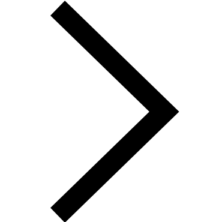
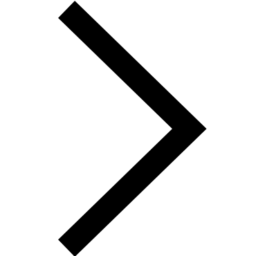
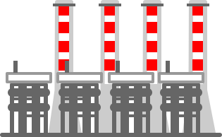
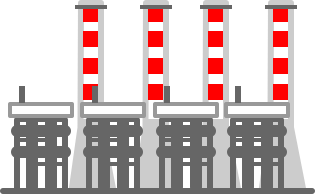
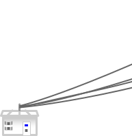
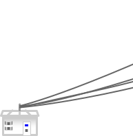
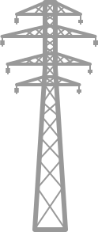
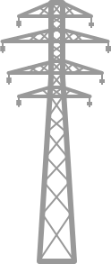

Exploiter
Réparer
Entretenir
95 % du réseau de distribution d'électricité.
Réaliser
11 millions d'interventions techniques.
1 300 000 kms de lignes.
16 500 MW raccordés énergies renouvelables.
Etre
Proche des clients.
Disponible.
Impliqué.
Innovant.
Agir
Renforcer les réseaux.
Améliorer la distribution de l'électricité.
Améliorer la maîtrise de la demande d'énergie.
Anticiper
Les besoins et territoires de demain.
Réduire l'impact des réseaux sur les paysages.
Protéger la biodiversité.
Devenir
Le pionnier européen dans le développement des réseaux intelligents.
Le distributeur de référence en Europe.

 ou  ou sur celles du clavier.
ou  ou sur celles du clavier. 
 


 


 
